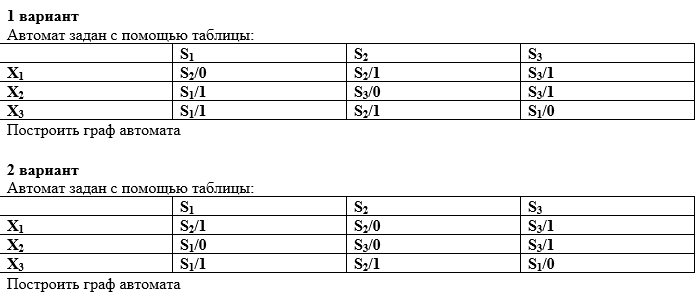

Тема: Построение простейших автоматов.
Дидактическая цель: закрепить теоретические знания по основным понятиям простейших автоматов, их характеристикам и выработать практические навыки по построению простейших автоматов.Литература:
1. Еловенко Н.А. Дискретная математика. Учебное пособие. – Волгоград. ГОУ СПО ВЭТК. 2008. Глава 10.
Ход занятия:
1. Проверка теоретической подготовки студентов (определение цифрового автомата с памятью без памяти, синхронный, асинхронный и автономный автоматы, автомат Мили, автомат Мура, комбинированный автомат).
2. Инструктаж преподавателя о ходе выполнения работы.
3. Выполнение работы с использованием методических указаний по вариантам.
4. Защита практической работы с ответами на контрольные вопросы (устно).
5. Подведение итогов и оценка работы каждого студента.
Порядок выполнения работы:
1. Решить задания, соблюдая порядок оформления примера и оформить отчет (номер, тема и цель практической работы, решение задания по варианту, вывод)

2. Подготовить ответы на контрольные вопросы, сделать вывод и предъявить отчет преподавателю.Контрольные вопросы: Описать процесс построения графа для автомата, заданного определённой таблицей
1. Какая булева функция принимает единичное значение, только если ВСЕ аргументы равны единице?
2. Три вида представления логической функции это:
3. Сколько входов может иметь элемент КОНЪЮНКЦИИ на логической схеме?
4. Какая булева операция имеет на схеме ОДИН вход?
5. Сколько единиц можно объединить в группу в диаграмме Карно?
6. Как проверить логические функции на тождественность?
7. Как перейти от таблицы истинности к логической формуле?
8. Какая булева функция принимает нулевое значение, если переменные РАЗЛИЧНЫ?
9. Какая булева функция на логической схеме обозначается прямоугольником с ЕДИНИЦЕЙ внутри?
10. Укажите формулу ПОГЛОЩЕНИЯ:
11. Какая булева функция принимает единичное значение, если ХОТЯ БЫ ОДИН аргумент равен единице?
12. Какая булева функция принимает единичное значение, если аргумент равен НУЛЮ?
13. Какая булева функция принимает нулевое значение, если переменные РАВНЫ?
14. Как перейти от логической формулы к таблице истинности?
15. При минимизации логической функции методом Карно-Вейча используется:
16. Укажите запрещенный вариант склейки единиц при минимизации логической функции методом Карно-Вейча:
17. Укажите СОЧЕТАТЕЛЬНЫЙ ЗАКОН:
18. Множество С является ОБЪЕДИНЕНИЕМ множеств А и В, если в С входят:
19. Множество С является ПЕРЕСЕЧЕНИЕМ множеств А и В, если в С входят:
20. Множество С является РАЗНОСТЬЮ множеств А и В (А\В), если в С входят:
21. Множество С является ДОПОЛНЕНИЕМ множества А, если в С входят:
22. Ориентированный граф отличается от неориентированного тем, что у него есть:
23. Одно ребро в графе связывает:
24. Граф называется мультиграфом, если он имеет:
25. Граф называется псевдографом, если он имеет:
26. Две вершины называются смежными, если:
27. Изолированной вершиной называется вершина, имеющая:
28. Висячей вершиной называется вершина, имеющая:
29. Цепью называется маршрут, в котором
30. Граф без циклов называется:
31. Длина маршрута - это:
32. Автомат, имеющий устройство синхронизации, называется
33. Цифровой автомат с памятью - это автомат, в котором
Практические вопросы на экзамен по «Дискретной математике»:
1. По формуле (3 аргумента) построить схему, заполнить таблицу истинности. По таблице истинности составить СДНФ.
2. По таблице истинности (3 аргумента) составить СДНФ и минимизировать логическую функцию методом Карно-Вейча. Доказать верность результата.
3. По схеме (3 аргумента) записать логическую формулу, заполнить таблицу истинности и составить СДНФ.
_ _ 4. Даны два множества А и В. Определить А\В, А\В, А\В, В\А, А, В.
5. Дан граф. Заполнить для него матрицу смежности и матрицу инцидентности. Указать степени вершин графа. Содержит ли граф эйлеровую цепь и эйлеровый цикл?
2. Три вида представления логической функции это:
3. Сколько входов может иметь элемент КОНЪЮНКЦИИ на логической схеме?
4. Какая булева операция имеет на схеме ОДИН вход?
5. Сколько единиц можно объединить в группу в диаграмме Карно?
6. Как проверить логические функции на тождественность?
7. Как перейти от таблицы истинности к логической формуле?
8. Какая булева функция принимает нулевое значение, если переменные РАЗЛИЧНЫ?
9. Какая булева функция на логической схеме обозначается прямоугольником с ЕДИНИЦЕЙ внутри?
10. Укажите формулу ПОГЛОЩЕНИЯ:
11. Какая булева функция принимает единичное значение, если ХОТЯ БЫ ОДИН аргумент равен единице?
12. Какая булева функция принимает единичное значение, если аргумент равен НУЛЮ?
13. Какая булева функция принимает нулевое значение, если переменные РАВНЫ?
14. Как перейти от логической формулы к таблице истинности?
15. При минимизации логической функции методом Карно-Вейча используется:
16. Укажите запрещенный вариант склейки единиц при минимизации логической функции методом Карно-Вейча:
17. Укажите СОЧЕТАТЕЛЬНЫЙ ЗАКОН:
18. Множество С является ОБЪЕДИНЕНИЕМ множеств А и В, если в С входят:
19. Множество С является ПЕРЕСЕЧЕНИЕМ множеств А и В, если в С входят:
20. Множество С является РАЗНОСТЬЮ множеств А и В (А\В), если в С входят:
21. Множество С является ДОПОЛНЕНИЕМ множества А, если в С входят:
22. Ориентированный граф отличается от неориентированного тем, что у него есть:
23. Одно ребро в графе связывает:
24. Граф называется мультиграфом, если он имеет:
25. Граф называется псевдографом, если он имеет:
26. Две вершины называются смежными, если:
27. Изолированной вершиной называется вершина, имеющая:
28. Висячей вершиной называется вершина, имеющая:
29. Цепью называется маршрут, в котором
30. Граф без циклов называется:
31. Длина маршрута - это:
32. Автомат, имеющий устройство синхронизации, называется
33. Цифровой автомат с памятью - это автомат, в котором
Практические вопросы на экзамен по «Дискретной математике»:
1. По формуле (3 аргумента) построить схему, заполнить таблицу истинности. По таблице истинности составить СДНФ.
2. По таблице истинности (3 аргумента) составить СДНФ и минимизировать логическую функцию методом Карно-Вейча. Доказать верность результата.
3. По схеме (3 аргумента) записать логическую формулу, заполнить таблицу истинности и составить СДНФ.
_ _ 4. Даны два множества А и В. Определить А\В, А\В, А\В, В\А, А, В.
5. Дан граф. Заполнить для него матрицу смежности и матрицу инцидентности. Указать степени вершин графа. Содержит ли граф эйлеровую цепь и эйлеровый цикл?